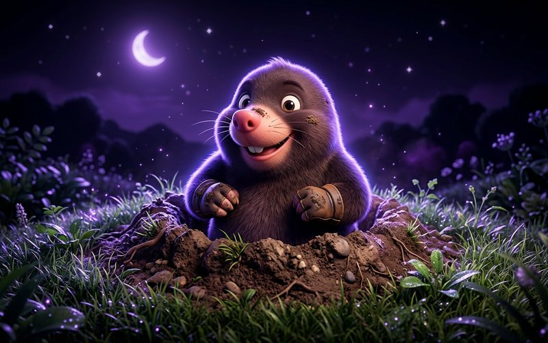
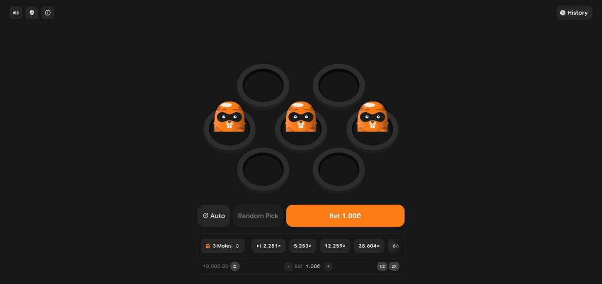

An MYBC Originals level-climb game. Pick a hole on each row; find the mole and the multiplier climbs, cash out any time, hit the trap and the round is gone. It's the lineup's charm carrier: 2D characters doing the emotional work that raw numbers can't.

MOLES Instant win · Level climb Playable demo soonMoles is a ladder of decisions. Every row you climb multiplies your potential payout and raises the odds of the trap. The design problem isn't explaining the rules, players get them in one round, it's making the next pick feel heavier than the last one. The multiplier ladder stays visible at all times, the current cashout value sits on the button itself, and each successful pick plays a bigger celebration than the one before, so walking away always means leaving a party.

The moles aren't decoration; they're the feedback system. A found mole pops up grinning, a trap does the opposite, and the animation timing is tuned so the reveal lands before the balance updates: emotion first, accounting second. This game defined the character-driven template that other Originals (and Keno's port) later reused: the shell, the drawers, the history, and the boot rhythm all originated here.
The character reaction plays before the balance changes. Players read the outcome from the character, not from a number diff.
Technically simpler, emotionally flat. When the number moves first, the animation becomes a rerun of news you already have.
The game ships in two RTP configurations (96.5 and 99) against the production RGS engine. Free rounds support both payout contracts: inclusive rounds pay the full payout, exclusive rounds pay the payout minus the stake, and the history labels which was which. Every round can be verified in-game through the provably fair drawer, with a local verification path so trust doesn't require a network call.
Moles set the standard for the lineup: if a pattern works here, in the shell, the drawers, the free-round contract, the verification ritual, it becomes the pattern everywhere.
Moles is live with a real-money operator and is one of the lineup's workhorses: 366,000+ rounds played by 630+ unique players so far. The level-climb loop does exactly what it was designed to do, keep the next pick feeling heavier than the last one.